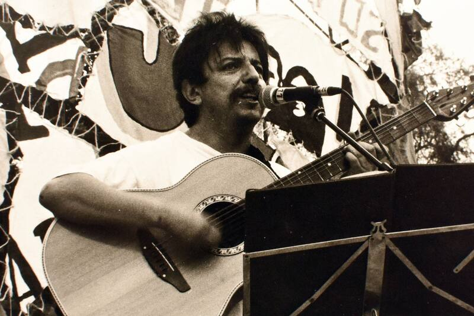
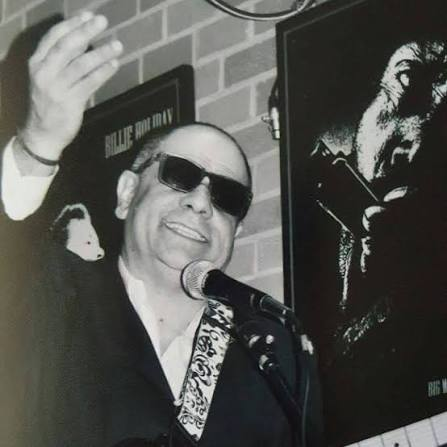

2023—2025
Liceo Madre Vicencia
Profesor de Música
Clases de Música desde 7° básico hasta 4° medio, junto con talleres de conjunto instrumental.
Profesor · Músico · Productor
Profesor de Música Guitarrista, compositor y productor musical
Docencia musical, interpretación, composición y producción. Una trayectoria que conecta la educación con la creación artística y la música en vivo.
02 — Sobre mí
Educación, interpretación y producción como partes de una misma práctica profesional.
Soy profesor de Música titulado de la Universidad Alberto Hurtado, con mención en Dirección de Conjuntos Instrumentales y siete años de experiencia docente en educación básica y media.
Mi trabajo pedagógico integra interpretación, creación, apreciación musical y trabajo colaborativo. He diseñado experiencias de aprendizaje, dirigido conjuntos y acompañado procesos musicales en contextos escolares diversos.
Como guitarrista, cantautor, compositor y productor, he desarrollado obra propia, proyectos colectivos y colaboraciones con otros artistas. En toda mi producción musical propia he compuesto, grabado e interpretado el material, participando además en su edición, mezcla y producción.
03 — Educación y trayectoria docente
Experiencia en enseñanza básica y media, enseñanza instrumental, planificación, evaluación y actividades artísticas escolares.
Profesor de Música
Clases de Música desde 7° básico hasta 4° medio, junto con talleres de conjunto instrumental.
Profesor de Música
Clases de Música en enseñanza básica y talleres de conjunto instrumental.
Profesor de Música
Clases de Música en enseñanza básica, además de talleres de guitarra y coro.
Profesor de Música
Clases de Música en enseñanza básica y media, junto con talleres de conjunto instrumental para todos los niveles. Participación como monitor en el encuentro intercomunal escolar Promesas de la Música.
Ver nota del encuentroProfesor de Reinserción Educativa · Programa PDE
Trabajo en terreno con estudiantes, apoyando y acompañando sus procesos de reinserción en la educación.
Profesor de Guitarra Eléctrica
Enseñanza de fundamentos de la guitarra eléctrica y repertorio popular a personas de distintas edades: jóvenes, adultas y adultas mayores.
04 — Trayectoria artística

Colaboración destacada
Guitarrista y corista · 2019—2024 · Colaboración retomada en 2026
Interpretación de guitarra, coros, preparación de repertorio y presentaciones en vivo junto al compositor, músico y poeta chileno. La colaboración tuvo una pausa después de 2024 y fue retomada en 2026.
También integré la banda de estudio del álbum Quiero Seguir Continuando (2020).
Trayectoria solista
Canciones y producciones propias en las que compongo, grabo e interpreto el material, desde la creación inicial hasta el trabajo de estudio. Camilo Suazo es mi nombre artístico principal y vigente.
Proyecto diferenciado
Proyecto de música popular con los EP Antología Adolescente y Pájaro Azul.
Agrupaciones
Participación como músico en agrupaciones de rock y música popular, además de procesos de grabación y producción.

Colaboración artística y discográfica
Guitarrista y cantante
He trabajado junto a Ricardo Duhart como guitarrista y cantante. También produje y toqué en el EP Maldita Comedia.
Escuchar Maldita Comedia en Spotify05 — Música y producción
Discografía solista de Camilo Suazo. Algunos lanzamientos se publicaron originalmente bajo un seudónimo anterior, indicado solo como referencia histórica.
Obra compuesta, grabada e interpretada por Camilo Suazo, publicada originalmente bajo el seudónimo Carlo Sú.
Escuchar en SpotifyComposición, grabación, interpretación, mezcla y masterización de Camilo Suazo. Publicado originalmente bajo el seudónimo Carlo Sú.
Escuchar en SpotifyTodo Puede Ser, Llegando a Yungay y En el Fin, compuestas, grabadas e interpretadas por Camilo Suazo.
Escuchar en SpotifyProducción para otros artistas
Produje y toqué en Maldita Comedia, EP de Ricardo Duhart, conocido artísticamente como Reverendo Dú.
Escuchar en SpotifyObra propia
En toda mi producción musical propia compongo, grabo e interpreto el material, además de trabajar en arreglos, edición, mezcla y producción.
06 — Notas de prensa
Publicaciones que recorren mi trabajo como cantautor y mi participación como músico junto a Mauricio Redolés.
Entrevista sobre la propuesta autoral de Camilo Suazo, Los del Otro Lao y el EP Antología Adolescente.
Leer notaConversación sobre composición, producción y el proceso creativo de Pájaro Azul.
Leer entrevistaLa nota registra la participación de Camilo Suazo en guitarra acústica durante la grabación del sencillo.
Leer notaPublicación sobre el álbum de Mauricio Redolés que identifica a Camilo Suazo como integrante de la banda de estudio.
Leer nota07 — Formación y competencias
Formación principal
Mención en Dirección de Conjuntos Instrumentales
Universidad Alberto Hurtado
Segunda formación universitaria
Universidad Andrés Bello · Titulado en 2025
Formación complementaria aplicada a datos, automatización y soluciones tecnológicas.
Formación complementaria
Experiencia interdisciplinaria
Experiencia profesional en análisis de datos, automatización y soluciones digitales, incluido mi paso por SmartUp hasta octubre de 2026.
08 — Contacto
Disponible para oportunidades docentes, proyectos musicales, presentaciones en vivo, producción, colaboraciones artísticas y enseñanza instrumental.